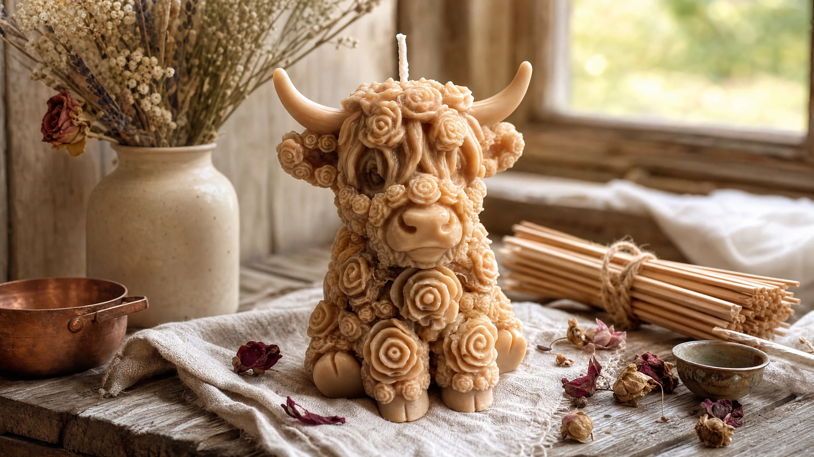
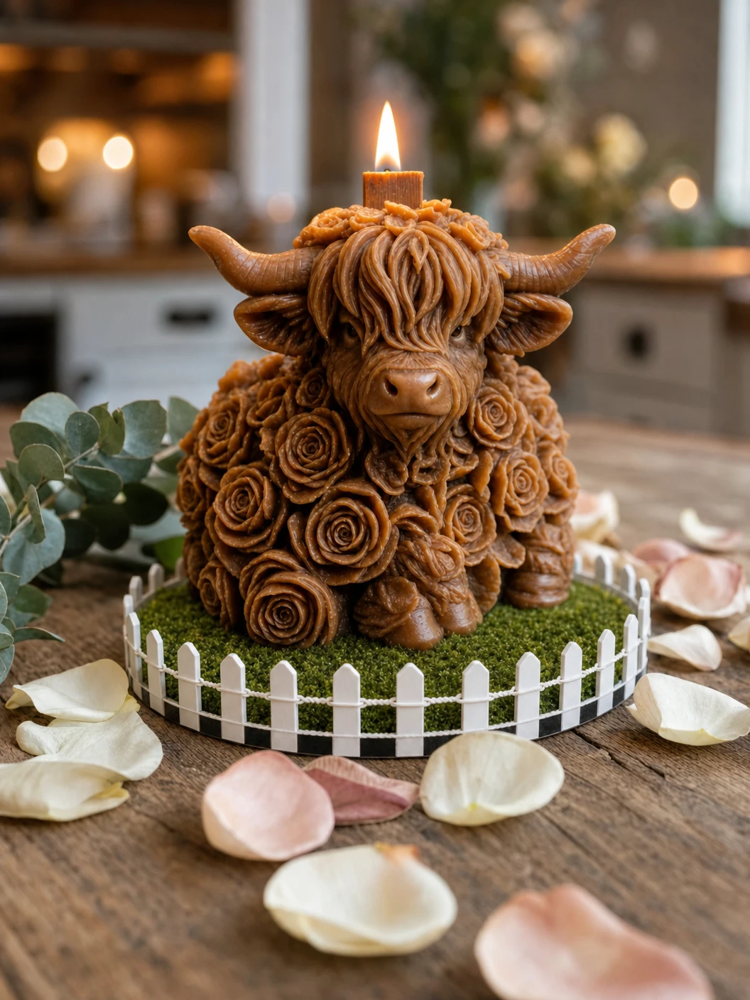

Handcrafted with love, beeswax, and a whole lot of Texas pride.
Petal & Pasture began the way all great things do — with a love of the land, a passion for craft, and a Highland Cow that stole everyone's heart.
What started as a creative hobby quickly became something more. Friends couldn't stop asking about the adorable little beeswax animals. Family members wanted them as gifts. And before long, Petal & Pasture Custom Candles was born — a Texas-made brand dedicated to bringing the warmth and charm of the pasture into every home.
We believe a candle should be as clean as the air it burns in. That's why every single Petal & Pasture candle is made with 100% organic triple-filtered beeswax — the purest, most natural wax available. No paraffin. No synthetic additives. No compromise.
Our bamboo wicks are chosen specifically for their clean, slow burn. Unlike cotton wicks, bamboo wicks don't mushroom or produce soot. They burn steadily, evenly, and quietly — letting the warm, honey-sweet natural scent of pure beeswax fill your space without any artificial fragrance.
Every animal is hand-poured and hand-finished in small batches. We inspect each one personally before it leaves our hands, because we know it's going to mean something to the person who receives it — whether it's a birthday gift, a housewarming present, or a little treat for yourself.
We are proud to be a Texas-made brand. The wide open pastures, the wildflowers, the golden sunsets — all of it lives in every candle we make. When you light a Petal & Pasture candle, we hope you feel a little bit of that Texas magic too.
We make candles the way they should be made — slowly, carefully, and with real pride in the craft. Here's what you can always expect from us:
Every candle is hand-poured in small batches, inspected individually, and shipped with care. We use only natural bamboo wicks, and our colors are blended directly into the wax — never painted on. What you see is what you get: pure, beautiful beeswax in the color of your choice.
Shop the Collection →